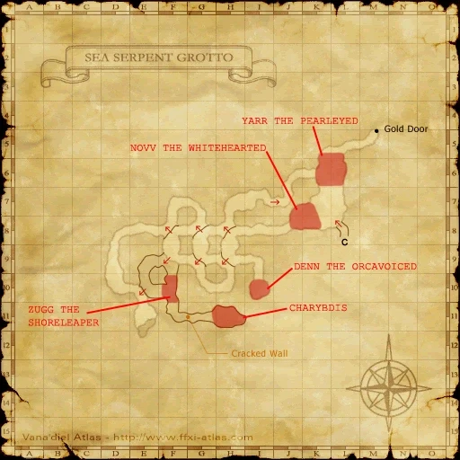

Level 75 reference · Zenith rules
|
Job: Monk Notorious Monster |
|
|
Zone |
Level |
Drops |
Steal |
Spawns |
Notes | ||||||
|
80-81 |
|
1 |
A, H
| ||||||||
|
HP = Detects Low HP; M = Detects Magic; Sc = Follows by Scent; T(S) = True-sight; T(H) = True-hearing JA = Detects job abilities; WS = Detects weaponskills; Z(D) = Asleep in Daytime; Z(N) = Asleep at Nighttime | |||||||||||


Image source
Notes:
- Located around (G-11) - (H-11) (past the door that requires a Gold Beastcoin to open).
- Lottery pop of Devil Manta. One Devil Manta always pops inside the room and another can pop inside or immediately outside the room. The one that alternates pop locations is the correct placeholder. However, Charybdis will only pop inside the room.
- There is a rumor that two mantas will only pop if window is open. This is false; two mantas can pop whether the window is open or not.
- Minimum respawn time of 8 hours. After that time passes, Charybdis has roughly a 5-10% chance to spawn in place of its placeholder. (Devil Mantas have 16 minute repop times.)
- Immune to Sleep, susceptible to Bind/Gravity, although Gravity resistance accumulates with use.
- Drops about 25,000 gil.
- Has about 30,000 HP.
- Uses all Sea Monk specials.
- Does not link with Devil Mantas, nor do Devil Mantas link with it.
- Regularly attacks multiple times in one round, and despite what appears to be high attack speed, Charybdis is not using Hundred Fists (it has no 2hr ability) and actually has longer delay than normal between attack rounds. Spells like the tank's Utsusemi should be recast at the beginning of Charybdis's attack round; even though it appears to still be hitting the player with subsequent hits, the hits have already occurred, and will not cause spell interruption.
- Some focus on evasion for the tank will help greatly toward surviving Charybdis's attack salvos. This can come in the form of equipment, or a BRD's Mambo spells. A NIN tank with no focus on evasion will generally have a difficult time surviving against this enemy.
- Killable by: 15 level 70 players; 6 level 75 players; Trio by 75 NIN or THF or a very skilled PLD, BRD, RDM; Duoable by 75 NIN or THF, BRD or RDM, Soloable by a very skilled 75 RDM, using DoT. Very long and tough fight.
Video
See Video.
Adapted from Eden Wiki: Charybdis · Contributors and history · CC BY-SA 4.0. Revision 1902. Layout, links and optional background text adapted for Zenith.